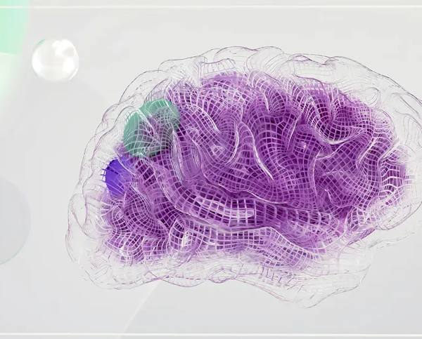
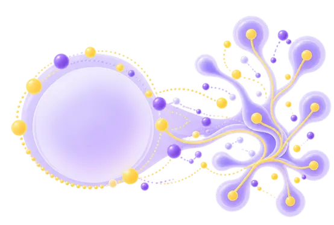

Clinical
Ketamir-2
Chemotherapy-induced peripheral neuropathy (CIPN).
Phase 1 completed.

Chemotherapy-induced peripheral neuropathy (CIPN).
Phase 1 completed.
Inflammatory pain.
Advancing Toward IND
Obesity.
Advancing Toward IND
CIPN is nerve damage caused by the very cancer treatments meant to save lives.
No FDA-approved therapy is specifically indicated for CIPN.

Randomized, double-blind, placebo-controlled study in healthy volunteers across seven cohorts.
No serious adverse events or dose-limiting toxicities reported. Adverse events were predominantly mild.
Rapid oral absorption and dose-proportional Cmax, with consistent exposure across repeated dosing.
Phase 1 completed. Phase 2a site initiation targeted for 1Q 2027.*
IND submission targeted for Q1 2027.*
Advancing toward IND.
*Forward-looking targets, subject to IRB review, site activation, IND-enabling work and other customary requirements.
Investigational, not FDA-approved. Forward-looking statements on Phase 2a and IND timing, financing and going-concern doubt. See SEC filings.